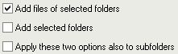

Ima nekoliko naèina dodavanja datoteka na listu:
Kada kliknete tipku "Dodaj datoteke" pojavljuje se standardni prozor za odabir datoteka. Ovaj prozor je pod kontrolom Windowsa, tako da radi kao u drugim programima. Jedna stvar koju trebate znati je da redoslijed datoteka koje æe biti vraæene u ovom prozoru nisu toèno po redoslijedu koji vidite. Prvo, Windows šalje datoteku koja je fokusirana (tj. ima malu toèkastu granicu, to je obièno zadnja datoteka koju ste odabrali). Zatim šalje sve datoteke koje slijede. Kada doðe do kraja, skaèe na vrhu za slanje preostalih datoteka.
Takoðer može nastati nekih problema s brzinom kada pokušavate dodati tisuæe datoteka. Prozor može potrajati cijelu vjeènost dok pošalje imena datoteka programu. Ako imate takav sluèaj, bolje upotrijebite funkciju "Dodaj mape".
Kada kliknete tipku "Dodaj mape" pojavljuje se prozor, koji vam omoguæuje odabir jedne ili više mapa. Ovaj prozor nije samo dizajniran za dodavanje mapa na popis, nego i njihovog sadržaja.
Nekoliko opcije na dnu prozora omoguæuju da odredite što treba dodati na popis:

Prva odreðuje hoæe li se datoteke koje se nalaze u odabranoj mapi(ama) dodati ili ne. Druga navodi ako se odabrana mapa(e) treba(ju) dodati ili ne. Treæa navodi ako se podmape odabrane mape(a) moraju takoðer ukljuèiti (to se odnosi na sve podrazine, ne samo na prvu).
Trenutno, ovaj prozor ne prikazuje mrežne stavke ili posebne ureðaje koji nemaju svoje slovo pogona (mrežni diskovi koji imaju slovo pogona æe se prikazati na popisu). U buduænosti ovo može biti poboljšano (barem za mrežne stavke). Do tada, tipka "Mreža" omoguæuje izabrati mapu s mrežnog pogona. Za takvo dodavanje, prevuci & ispusti može biti lakše nego ovaj prozor.
Možete prevuæi & ispustiti datoteke iz Windows Explorera (ili drugog programa koji je s tim kompatibilan, kao Total Commander ili Servant Salamander) direktno u glavni prozor Ant Renamera. To je obièno puno jednostavniji naèin za dodati datoteke nego da ih odaberete u "Dodaj datoteke" prozoru.
Po zadanim postavkama, kad ispustite datoteke pojavljuje se prozor. To vam omoguæuje odabir kako želite dodati datoteke. Ove opcije su iste kao one dostupne u prozoru "Dodaj mape". Opcija s oznakom "Nemoj ponovno pitati" omoguæuje da zadržite odabrane opcije za buduæe povuci & ispusti, tako da se prozor ne prikazuje ponovno. Ako oznaèite ovu opciju i želite je odbaciti (ili promijeniti opciju), možete to uèiniti na stranici "Datoteke & Mape" u prozoru Opcije. Za vraæanje ovog prozora jednom, bez mijenjanja zadanog ponašanja, možete držati tipku Ctrl ili Shift za vrijeme ispuštanja datoteke. To omoguæava, na primjer, dodati mape na popis kada je zadano ponašanje koje ste odabrali samo za dodavanje datoteka.
Ista ogranièenja vrijede kao za "Dodaj datoteke" (redoslijed datoteka i problem brzine s puno datoteka).